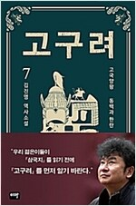

01
조국의 시간

조국 (지은이) | 한길사 | 2021년 5월
2019년 8월 9일, 조국이 법무부장관 후보로 지명된 이후 벌어진 일련의 사태를 정리하고 자신의 솔직한 심정을 기록했다. 진보적 지식인으로서 꿈꿔왔던 검찰개혁을 공직자로서 실현하는 과정에서 겪은 고난의 시간을 가감 없이 담아냈다.
02
2.고양이 해결사 깜냥 3
아쿠타미 게게 (지은이), 이정운 (옮긴이) | 서울미디어코믹스(서울문화사) | 2021년 5월
아파트 경비실과 피자 가게를 거쳐 깜냥이 찾아간 곳은 기합 소리가 웅장하게 울려 퍼지는 태권도 도장이다. 흰띠를 배에 두르고 태권도 사범의 조수가 된 깜냥은 태권도의 고수가 될 수 있을까? ‘냥 펀치’ ‘뒷발 팡팡’ 등 깜냥만의 기술로 거뜬히 문제를 해결해 나가는 깜냥의 활약이 유쾌하게 펼쳐진다.
03
소크라테스 익스프레스

에릭 와이너 (지은이), 김하현 (옮긴이) | 어크로스 | 2021년 4월
프랑스 사상가 모리스 리즐링은 말한다. “결국 인생은 우리 모두를 철학자로 만든다.” 하지만 인생이 호락호락하지 않음을 우리는 수시로 깨닫는다.
04
완전한 행복

정유정 (지은이) | 은행나무 | 2021년 6월
속도감 있는 문장, 치밀하고 정교하게 쌓아올린 플롯과 독자의 눈에 작열하는 생생한 묘사로 정유정만의 스타일을 가감 없이 보여주는 한편, 더 완숙해진 서스펜스와 인간의 심연에 대한 밀도 높은 질문으로 가득 찬 수작이다.
05

고구려 7
김진명 (지은이) | 이타북스 | 2021년 6월
대한민국 역사소설의 새로운 장을 여는 작품! 이례적인 베스트셀러 작가 김진명 필생의 역작 『고구려』의 개정판과 신작이 동시에 묶여 출간된다. 기존 출시되어있는 여섯 권(1~6권)의 개정판에, 소수림왕 후기를 다룬 신간 7권이 더해져 고구려 최전성기를 관통하는 왕들의 살아 숨 쉬는 일대기를 한 번에 만나볼 수 있다.